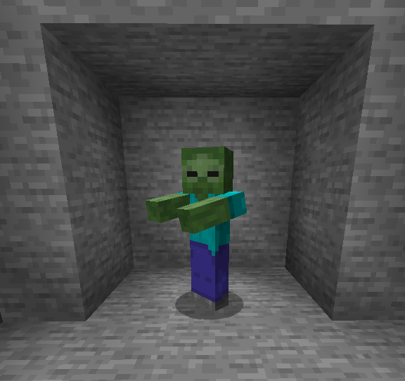
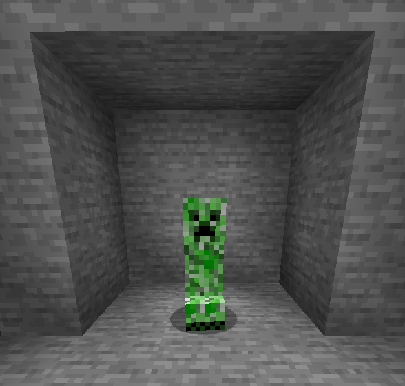
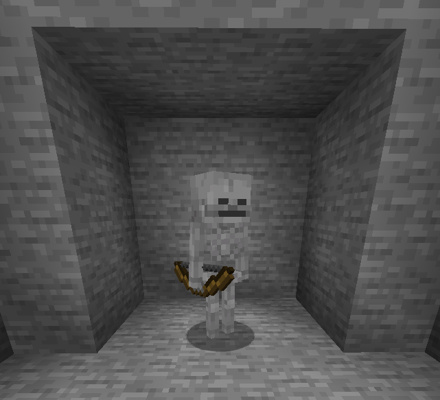
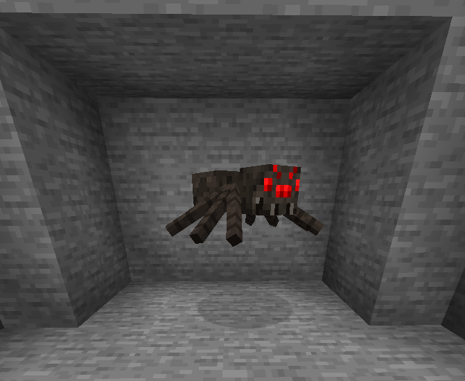
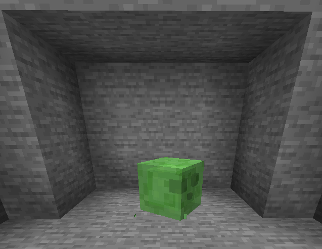

Les mobs hostiles sont des créatures dangereuses qui apparaissent dans l'obscurité et attaquent le joueur. Voici quelques-unes des plus communes :
| Mob | Description | Comportement |
|---|---|---|
| Zombie | Un mort-vivant qui brûle à la lumière du jour pouvant infecter des villageois. | Attaque le joueur, brûle à la lumière du jour. |
| Creeper | Explosif, vert et sournois, il explose en s'approchant du joueur. Il a peur des chats et peu être allumer par un briquet | Explose lorsqu'il est à proximité du joueur. Ne brûle pas le jour. |
| Squelette | Un archer qui tire des flèches sur le joueur. | Tire des flèches à distance, se cache la nuit. |
| Araignée | Une créature noire qui cours et vous saute dessus. Il existe une variété vénimeuse dans les mineshafts. | Attaque le joueurs en lui sautant dessus, marche sur les murs. |
| Slime | Gros tas vert obligé de sauter pour se déplacer. Ne peut être trouvé que dans certaines zones de la map. | Il se divise quand il est tué. |
Les mobs hostiles peuvent rendre l'exploration de Minecraft dangereuse, surtout la nuit ou dans les lieux sombres. Il est important de s'équiper de bonnes armes et armures pour se protéger. Pour éviter de faire apparaitre des monstres vous pouvez placer des Torches au sol ou le remplacer par des dalles.
|  |  |  |  |  |